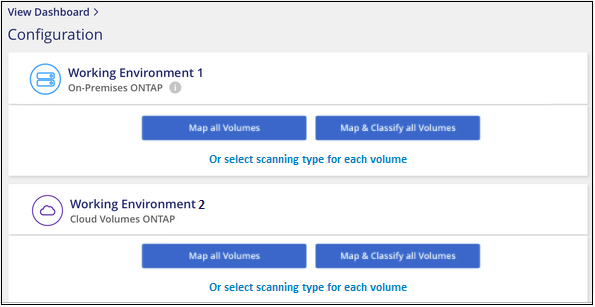

Request doc changes
Request doc changes Edit this page
Edit this page Learn how to contribute
Learn how to contributeGetting started with Cloud Data Sense for Cloud Volumes ONTAP and on-premises ONTAP
Contributors
Complete a few steps to start scanning your Cloud Volumes ONTAP and on-premises ONTAP volumes using Cloud Data Sense.
Quick start
Get started quickly by following these steps, or scroll down to the remaining sections for full details.
 Discover the data sources that you want to scan
Discover the data sources that you want to scanBefore you can scan volumes, you must add the systems as working environments in Cloud Manager:
-
For Cloud Volumes ONTAP systems, these working environments should already be available in Cloud Manager
-
For on-premises ONTAP systems, Cloud Manager must discover the ONTAP clusters
 Deploy the Cloud Data Sense instance
Deploy the Cloud Data Sense instanceDeploy Cloud Data Sense if there isn’t already an instance deployed.
 Enable Cloud Data Sense and select the volumes to scan
Enable Cloud Data Sense and select the volumes to scanClick Data Sense, select the Configuration tab, and activate compliance scans for volumes in specific working environments.
 Ensure access to volumes
Ensure access to volumesNow that Cloud Data Sense is enabled, ensure that it can access all volumes.
-
The Cloud Data Sense instance needs a network connection to each Cloud Volumes ONTAP subnet or on-prem ONTAP system.
-
Security groups for Cloud Volumes ONTAP must allow inbound connections from the Data Sense instance.
-
Make sure these ports are open to the Data Sense instance:
-
For NFS – ports 111 and 2049.
-
For CIFS – ports 139 and 445.
-
-
NFS volume export policies must allow access from the Data Sense instance.
-
Data Sense needs Active Directory credentials to scan CIFS volumes.
Click Compliance > Configuration > Edit CIFS Credentials and provide the credentials.
 Manage the volumes you want to scan
Manage the volumes you want to scanSelect or deselect the volumes that you want to scan and Cloud Data Sense will start or stop scanning them.
Discovering the data sources that you want to scan
If the data sources you want to scan are not already in your Cloud Manager environment, you can add them to the canvas at this time.
Your Cloud Volumes ONTAP systems should already be available in the Canvas in Cloud Manager. For on-premises ONTAP systems, you’ll need to have Cloud Manager discover these clusters.
Deploying the Cloud Data Sense instance
Deploy Cloud Data Sense if there isn’t already an instance deployed.
If you are scanning Cloud Volumes ONTAP and on-premises ONTAP systems that are accessible over the internet, you can deploy Cloud Data Sense in the cloud or in an on-premises location that has internet access.
If you are scanning on-premises ONTAP systems that have been installed in a dark site that has no internet access, you need to deploy Cloud Data Sense in the same on-premises location that has no internet access. This also requires that the Cloud Manager Connector is deployed in that same on-premises location.
Upgrades to Data Sense software is automated as long as the instance has internet connectivity.
Enabling Cloud Data Sense in your working environments
You can enable Cloud Data Sense on Cloud Volumes ONTAP systems (in AWS, Azure, and GCP) and on on-premises ONTAP clusters.
-
At the top of Cloud Manager, click Data Sense and then select the Configuration tab.

-
Select how you want to scan the volumes in each working environment. Learn about mapping and classification scans:
-
To map all volumes, click Map all Volumes.
-
To map and classify all volumes, click Map & Classify all Volumes.
-
To customize scanning for each volume, click Or select scanning type for each volume, and then choose the volumes you want to map and/or classify.
See Enabling and disabling compliance scans on volumes for details.
-
-
In the confirmation dialog box, click Approve to have Data Sense start scanning your volumes.
Cloud Data Sense starts scanning the volumes you selected in the working environment. Results will be available in the Compliance dashboard as soon as Cloud Data Sense finishes the initial scans. The time that it takes depends on the amount of data—it could be a few minutes or hours.
Verifying that Cloud Data Sense has access to volumes
Make sure that Cloud Data Sense can access volumes by checking your networking, security groups, and export policies. You’ll need to provide Data Sense with CIFS credentials so it can access CIFS volumes.
-
Make sure that there’s a network connection between the Cloud Data Sense instance and each network that includes volumes for Cloud Volumes ONTAP or on-prem ONTAP clusters.
-
Ensure that the security group for Cloud Volumes ONTAP allows inbound traffic from the Data Sense instance.
You can either open the security group for traffic from the IP address of the Data Sense instance, or you can open the security group for all traffic from inside the virtual network.
-
Ensure the following ports are open to the Data Sense instance:
-
For NFS – ports 111 and 2049.
-
For CIFS – ports 139 and 445.
-
-
Ensure that NFS volume export policies include the IP address of the Data Sense instance so it can access the data on each volume.
-
If you use CIFS, provide Data Sense with Active Directory credentials so it can scan CIFS volumes.
-
At the top of Cloud Manager, click Data Sense.
-
Click the Configuration tab.

-
For each working environment, click Edit CIFS Credentials and enter the user name and password that Data Sense needs to access CIFS volumes on the system.
The credentials can be read-only, but providing admin credentials ensures that Data Sense can read any data that requires elevated permissions. The credentials are stored on the Cloud Data Sense instance.
After you enter the credentials, you should see a message that all CIFS volumes were authenticated successfully.

-
-
On the Configuration page, click View Details to review the status for each CIFS and NFS volume and correct any errors.
For example, the following image shows four volumes; one of which Cloud Data Sense can’t scan due to network connectivity issues between the Data Sense instance and the volume.

Enabling and disabling compliance scans on volumes
You can start or stop mapping-only scans, or mapping and classification scans, in a working environment at any time from the Configuration page. You can also change from mapping-only scans to mapping and classification scans, and vice-versa. We recommend that you scan all volumes.

| To: | Do this: |
|---|---|
Enable mapping-only scans on a volume |
In the volume area, click Map |
Enable full scanning on a volume |
In the volume area, click Map & Classify |
Disable scanning on a volume |
In the volume area, click Off |
Enable mapping-only scans on all volumes |
In the heading area, click Map |
Enable full scanning on all volumes |
In the heading area, click Map & Classify |
Disable scanning on all volumes |
In the heading area, click Off |

|
New volumes added to the working environment are automatically scanned only when you have set the Map or Map & Classify setting in the heading area. When set to Custom or Off in the heading area, you’ll need to activate mapping and/or full scanning on each new volume you add in the working environment. |
Scanning data protection volumes
By default, data protection (DP) volumes are not scanned because they are not exposed externally and Cloud Data Sense cannot access them. These are the destination volumes for SnapMirror operations from an on-premises ONTAP system or from a Cloud Volumes ONTAP system.
Initially, the volume list identifies these volumes as Type DP with the Status Not Scanning and the Required Action Enable Access to DP volumes.

If you want to scan these data protection volumes:
-
Click Enable Access to DP volumes at the top of the page.
-
Review the confirmation message and click Enable Access to DP volumes again.
-
Volumes that were initially created as NFS volumes in the source ONTAP system are enabled.
-
Volumes that were initially created as CIFS volumes in the source ONTAP system require that you enter CIFS credentials to scan those DP volumes. If you already entered Active Directory credentials so that Cloud Data Sense can scan CIFS volumes you can use those credentials, or you can specify a different set of Admin credentials.

-
-
Activate each DP volume that you want to scan the same way you enabled other volumes.
Once enabled, Cloud Data Sense creates an NFS share from each DP volume that was activated for scanning. The share export policies only allow access from the Data Sense instance.
Note: If you had no CIFS data protection volumes when you initially enabled access to DP volumes, and later add some, the button Enable Access to CIFS DP appears at the top of the Configuration page. Click this button and add CIFS credentials to enable access to these CIFS DP volumes.
|
|
Active Directory credentials are only registered in the storage VM of the first CIFS DP volume, so all DP volumes on that SVM will be scanned. Any volumes that reside on other SVMs will not have the Active Directory credentials registered, so those DP volumes won’t be scanned. |